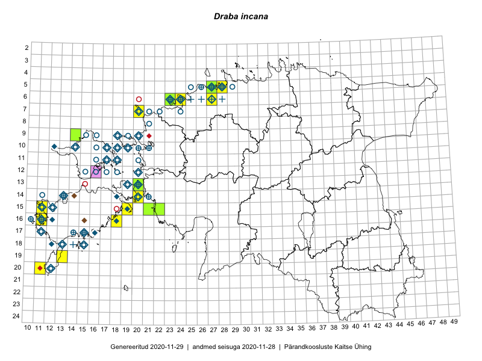

Draba incana
Uuendatud: 2016-12-01
Kaardile koondatud taksonid: Draba incana L.

Kaart põhineb 13 kirjel.
Viited andmebaasikirjetele
- Toomas Kukk, Eerik Leibak: 2015-08-10: 09-14: ala
- Kirsi Loide, Marje Loide: 2015-04-17T09:00Z: 13-22: ala
- Kirsi Loide, Marje Loide: 2015-04-20T07:00Z: 13-23: ala
- Oliver Parrest: 2015-05-20: 19-13: ala
- Mari Reitalu, Oliver Parrest: 2015-05-26: 20-11: ala
- Mari Reitalu, Sirje Azarov: 2015-05-16: 16-18: ala
- Mari Reitalu, Sirje Azarov: 2015-05-16: 16-18: GPS punkt
- Sirje Azarov, Mari Reitalu: 2015-05-23: 16-11: ala
- Sirje Azarov, Mari Reitalu: 2015-06-07: 16-11: GPS punkt
- Jaak-Albert Metsoja, Mari Metsoja, Ott Luuk: 2015-06-05: 06-24: ala
- Oliver Parrest, Mari Reitalu: 2015-05-26: 20-11: GPS punkt
- Tõnu Ploompuu: 2015-08-11: 06-27: ala
- Jaak-Albert Metsoja, Mari Metsoja, Ott Luuk: 2015-06-05: 06-24: GPS punkt